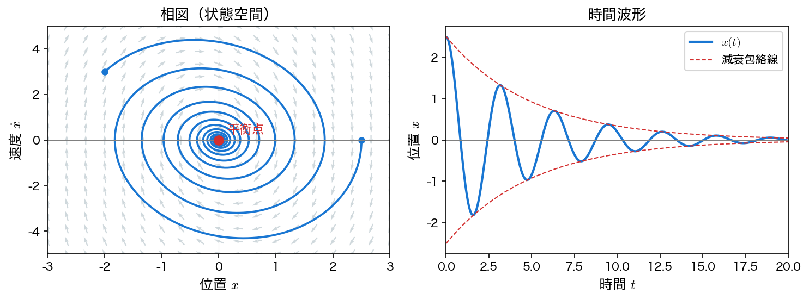

動的システムと状態空間表現
本ページでは、本講義を貫く枠組みである 動的システム と 状態空間表現 を導入する。これ以降の回（フーリエ・ラプラス・安定性・SVD・DMD）は、すべてこの枠組みの上で展開される。
システム：静的システムと動的システム
入力 \(\mathbf{u}\) と出力 \(\mathbf{y}\) の対応関係を システム と呼ぶ。システムは大きく 2 種類に分けられる。
- 静的システム（static system）: 出力がその瞬間の入力だけで決まる。例：抵抗 \(R\) に電圧 \(v\) をかけると電流 \(i = v/R\) が即座に決まる（オームの法則）。
- 動的システム（dynamical system）: 出力が過去の履歴にも依存し、時間とともに変化する。例：コンデンサにたまる電荷は、これまで流し込んだ電流の積み重ねで決まる。
本講義が対象とするのは後者、すなわち時間発展するシステムである。その振る舞いは、多くの場合常微分方程式で記述される。
例 1：RC 回路
抵抗 \(R\) とコンデンサ \(C\) を直列につなぎ、電圧 \(u(t)\) を加える。コンデンサの電圧 \(x(t)\) は次の微分方程式に従う。
入力 \(u(t)\) を急に立ち上げても、\(x(t)\) は時定数 \(RC\) をかけてゆっくり追従する。これが「動的」の本質である。
例 2：ばね・質量・ダンパ系
質量 \(m\) の物体がばね（ばね定数 \(k\)）とダンパ（減衰係数 \(c\)）につながれ、外力 \(u(t)\) を受ける。変位 \(x(t)\) は Newton の運動方程式より
に従う。振動・サスペンション・建物の揺れなど、力学系の最も基本的なモデルである。
例 3：人口モデル
個体数 \(x(t)\) が増殖率 \(r\) で増えるとき、\(\dot{x} = r x\) は指数関数的な増殖 \(x(t) = x_0 e^{rt}\) を与える。資源の上限 \(K\) を考えると、ロジスティック方程式 \(\dot{x} = r x (1 - x/K)\) という非線形の動的システムになる。
状態空間表現
これらの例に共通する記述の枠組みが 状態空間表現（state-space representation） である。
状態とは
状態（state） とは、「ある時刻 \(t_0\) でこれを知り、それ以降の入力 \(\mathbf{u}(t)\ (t \ge t_0)\) を与えれば、システムの将来が一意に決まる最小限の情報」である。状態を並べたベクトルを 状態ベクトル \(\mathbf{x}(t) \in \mathbb{R}^n\) と呼び、その成分を 状態変数 と呼ぶ。決まるのは「その先の入力もこみ」であることに注意する ── \(\dot{x}=u\) では、同じ \(x(t_0)\) から出発しても、以後の入力が違えば行き先は違う。
- ばね・質量・ダンパ系では、ある時刻の位置 \(x\) と速度 \(\dot{x}\) が分かれば、それ以降の運動が決まる。よって状態は \(\mathbf{x} = (x,\ \dot{x})^\top\) の 2 変数である。
- 状態ベクトルが張る空間 \(\mathbb{R}^n\) を 状態空間（state space）、その点の動きを 軌道（trajectory） と呼ぶ。
状態方程式と出力方程式
本講義が扱う動的システムは、状態の時間変化を表す 状態方程式 と、観測量を表す 出力方程式 の組で書ける。
ここで \(\mathbf{x}\in\mathbb{R}^n\) は状態、\(\mathbf{u}\in\mathbb{R}^m\) は入力、\(\mathbf{y}\in\mathbb{R}^p\) は出力である。この形は 有限次元・連続時間・決定論的・時不変 で、しかも \(\dot{\mathbf{x}}\) について陽に解けている場合に限る。係数が時間に依存する系なら \(\mathbf{f}(t,\mathbf{x},\mathbf{u})\) と書き、離散時間系・偏微分方程式・確率微分方程式・陰的な方程式（DAE）はこの形に収まらない。以降で「動的システム」というときは、断りのない限りこの範囲を指す。
陰的な方程式（DAE）とは
上の状態方程式は \(\dot{\mathbf{x}} = \cdots\) と、微分された量が左辺に単独で出ている（\(\dot{\mathbf{x}}\) について陽に解けている）。これに対して
の形でしか書けず、\(\dot{\mathbf{x}} = \cdots\) に直せないものを 陰的な方程式 という。典型は、微分方程式と時間微分を含まない拘束（代数式）が混ざった 微分代数方程式（DAE: Differential Algebraic Equation） である。
たとえば長さ \(\ell\) の振り子を、直交座標のままニュートンの式で書くと
となる。第 3 式は時間微分を含まない拘束であり、糸の張力にあたる \(\lambda\) には時間発展の式がない ── このままでは \(\dot{\mathbf{x}} = \mathbf{f}(\mathbf{x},\mathbf{u})\) の形に書き下せない。電気回路も同じで、コンデンサ・インダクタの微分則とキルヒホッフ則（代数式）が混ざるため、素直に立式すると DAE になる。
何が困るかというと、状態空間を土台に組み立てた道具 ── 固有値による安定性判定、伝達関数、標準的な数値積分 ── がそのままでは使えない。初期値も自由には選べず、拘束を満たす値にそろえる必要がある。対処は 2 通りで、拘束を使って変数を消し、陽な形に直す（振り子なら角度 \(\theta\) を状態にとれば \(\ddot{\theta} = -(g/\ell)\sin\theta\) と陽になる）か、DAE 用の解法（IDA・DASSL など）で直接解くかである。本講義が扱うのは前者、つまり陽な形に直せる系だけである。
なお、数値積分の 陰解法（implicit method） ── 次の時刻の値を未知数として方程式を解く積分法 ── は「解き方」の話であり、方程式そのものが陰的であることとは別の概念である。
線形時不変系
\(\mathbf{f}\) と \(\mathbf{g}\) が \(\mathbf{x}\), \(\mathbf{u}\) について線形で、係数が時間によらない（時不変）とき、システムは 線形時不変系（LTI: Linear Time-Invariant system） と呼ばれ、行列で簡潔に表せる。
- \(A \in \mathbb{R}^{n\times n}\)：システム行列（状態の時間発展を支配する。安定性を決めるのもこの行列の固有値である）
- \(B \in \mathbb{R}^{n\times m}\)：入力行列、\(C \in \mathbb{R}^{p\times n}\)：出力行列、\(D \in \mathbb{R}^{p\times m}\)：直達項
本講義で学ぶフーリエ・ラプラス・安定性解析は、いずれもこの LTI 系を扱うための道具立てである。
高階の微分方程式を 1 階の連立系に直す
状態空間表現の利点は、何階の微分方程式でも 1 階の連立系にまとめられることである。相図による解析はこの形を前提とするし、汎用の数値解法（動作確認 で使う solve_ivp など）も 1 階系を入力として受け取る。2 階系を直接積分する解法（Newmark 法・Verlet 法など）もあるが、まず 1 階に直す道具立てを知っておけばどの解法にも渡せる。
ばね・質量・ダンパ系（外力なし、\(u=0\)）を例にとる。
状態変数を 位置と速度 にとる。
すると \(\dot{x}_1 = x_2\) であり、運動方程式から \(\dot{x}_2 = \ddot{x} = -\dfrac{k}{m}x_1 - \dfrac{c}{m}x_2\) となる。まとめると、2 元 1 階の連立系（\(\dot{\mathbf{x}} = A\mathbf{x}\)）が得られる。
一般化
\(n\) 階の単一微分方程式が最高階について \(y^{(n)} = F(t,\, y,\, \dot{y},\, \dots,\, y^{(n-1)})\) と陽に解けていれば、\(y, \dot{y}, \ddot{y}, \dots, y^{(n-1)}\) を状態にとることで \(n\) 元 1 階の連立系に変換できる。本講義で扱う方程式はすべてこの形である。
平衡点と線形系の解
入力のない系 \(\dot{\mathbf{x}} = \mathbf{f}(\mathbf{x})\) を 自律系（autonomous system） と呼ぶ。\(\mathbf{f}(\mathbf{x}^\ast)=\mathbf{0}\) を満たす点 \(\mathbf{x}^\ast\) では状態が動かない。これを 平衡点（equilibrium point） と呼ぶ。ばね・質量・ダンパ系では原点 \(\mathbf{x}^\ast=\mathbf{0}\)（自然長で静止）が平衡点である。
線形系 \(\dot{\mathbf{x}} = A\mathbf{x}\) の解は、行列指数関数を用いて
と書ける。\(A\) の固有値 \(\lambda\) が解の増減を支配し、\(e^{\lambda t}\) の形で効いてくる。すべての固有値の実部が負なら平衡点に向かって減衰し、1 つでも実部が正なら発散する。複素の固有値は振動を生む。実部がちょうど \(0\) の固有値があるときは、この符号だけでは決まらない（第11回で扱う）。下図は減衰のある場合（すべての \(\mathrm{Re}\,\lambda<0\)）で、軌道が平衡点（原点）へ渦を巻きながら収束し、時間波形は減衰振動になる。

本講義との接続
固有値による安定性の判定は 第11回 線形安定性 で本格的に扱う。今回は「固有値の実部の符号が安定性を決める」というイメージをつかんでおけばよい。
Python で動的システムを解く
状態空間表現（1 階の連立系）にしておけば、Python の数値積分ライブラリでそのまま解ける。SciPy の solve_ivp を使い、上のばね・質量・ダンパ系を計算してみる。
import numpy as np
from scipy.integrate import solve_ivp
import matplotlib.pyplot as plt
# パラメータ（m x'' + c x' + k x = 0）
m, c, k = 1.0, 0.4, 4.0
A = np.array([[0.0, 1.0],
[-k / m, -c / m]]) # 状態行列
def rhs(t, x):
"""状態方程式 x' = A x（1階の連立系）"""
return A @ x
x0 = [2.5, 0.0] # 初期状態: 位置2.5, 速度0
t_eval = np.linspace(0, 20, 1000)
sol = solve_ivp(rhs, (0, 20), x0, t_eval=t_eval, rtol=1e-9)
# 固有値で安定性を確認（実部が負なら安定）
print("固有値:", np.linalg.eigvals(A))
# 時間波形を描画
plt.plot(sol.t, sol.y[0], label="position x(t)")
plt.xlabel("time t"); plt.ylabel("x"); plt.legend()
plt.show()
実行すると、固有値は \(-0.2 \pm 1.99i\) のように実部が負の複素数になり、出力（位置）は上図右のように減衰振動する。係数 \(c\)（減衰）を \(0\) にすると固有値は純虚数 \(\pm 2i\) となり、振幅の減らない持続振動になる。\(c\) を負にすると実部が正になり発散する ── 固有値の実部の符号が振る舞いを決めることを、自分で確かめてみてほしい。
確認問題（手を動かす）
上のコードで、減衰係数を c = 0.0、c = -0.2 に変えて実行し、固有値と時間波形がどう変わるかを観察せよ。sol.y[0] と sol.y[1] を軸にとってプロットすれば、相図（状態空間の軌道）も描ける。
まとめ
- システムは入力と出力の関係であり、出力がその瞬間の入力だけでなく過去の履歴にも依存するものを 動的システム と呼ぶ。「出力が時間変化する」ことではない（静的な \(y=2u\) でも \(u\) が動けば \(y\) は動く）。
- 動的システムは 状態 \(\mathbf{x}\) の時間発展を表す 状態方程式 \(\dot{\mathbf{x}} = \mathbf{f}(\mathbf{x}, \mathbf{u})\) で記述される。線形時不変系では \(\dot{\mathbf{x}} = A\mathbf{x} + B\mathbf{u}\) と行列で書ける。
- 高階の微分方程式は、最高階について解けていれば 1 階の連立系 に変換できる。
- 線形系の解は \(\mathbf{x}(t) = e^{At}\mathbf{x}_0\) で、\(A\) の固有値が安定性（減衰・振動・発散）を決める。全固有値の実部が負なら減衰、1 つでも正なら発散である。
次回からは、この枠組みのうえで フーリエ変換 を学び、システムを「周波数」の観点から解析していく。